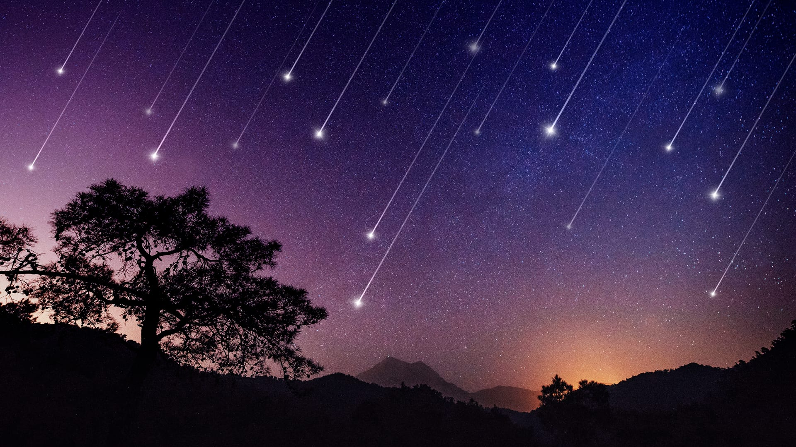
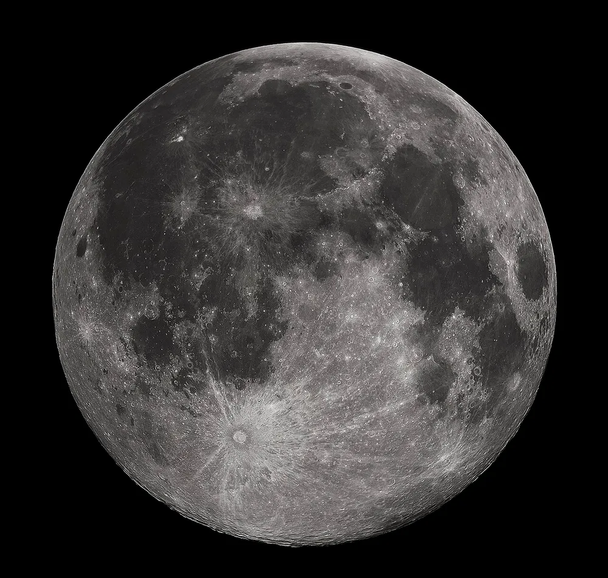
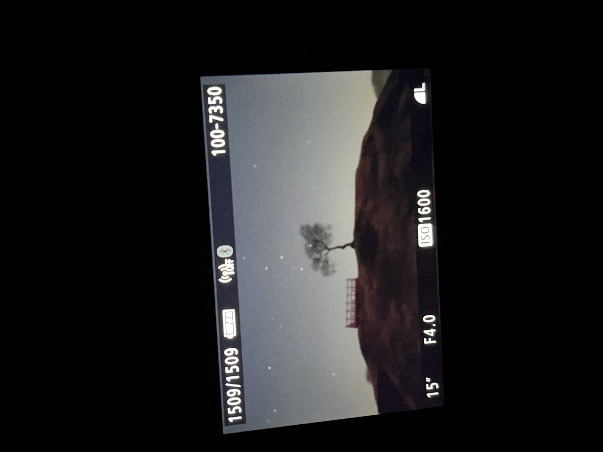
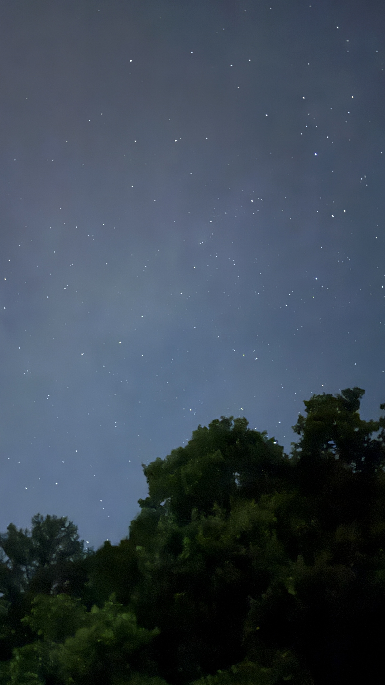

우주를 향한 작은 안내서
별자리와 태양계, 신비로운 천문현상부터 국내 최고의 관측 명소와 우주를 담은 작품까지.
별빛기행과 함께 밤하늘로 떠나는 여정을 시작해보세요.
올해 천문 현상
| 날짜 | 종류 | 이름 | 설명 |
|---|---|---|---|
| 2026.06.12 | 유성우 | 페르세우스자리 유성우 | 자정 이후 북동쪽 하늘, 시간당 최대 100개 관측 가능. |
| 2026.07.05 | 월식 | 개기월식 (블러드문) | 새벽 1시~4시, 달이 붉게 변하는 장관. 전국 맨눈 관측 가능. |
| 2026.08.03 | 행성 | 토성 충 — 최대 근접 | 소형 망원경으로 고리를 선명하게 볼 수 있는 최적기. |
| 2026.09.17 | 유성우 | 쌍둥이자리 유성우 | 시간당 최대 120개, 느리고 밝은 유성으로 초보자도 관측 쉬움. |
| 2026.10.28 | 오로라 | 오로라 가시 가능 예보 | 태양 활동 극대기. 북부 고지대에서 관측 가능성 높음. |
포토 갤러리
은하수

유성우

일식

보름달
직접 찍은 별사진

2025. 08. 14
연천 당포성

2025. 10. 03
가평 어딘가

2026. 01. 20
양평 벗고개 터널
별빛기행 둘러보기
별빛기행을 만든 사람
안녕하세요, 서진입니다.
어릴 때부터 밤하늘을 올려다보는 걸 좋아했습니다. 도시의 불빛 사이로도 가끔 보이는 별 하나에 마음이 설레곤 했어요.
달빛기행은 그 설렘을 기록하고 나누기 위해 만들었습니다. 별자리 이야기부터 직접 발로 찾아간 관측 명소, 그리고 제 손으로 담은 밤하늘 사진까지 — 밤하늘에 관한 모든 것을 조용히 모아두는 공간입니다.
SEOJIN · 별빛기행